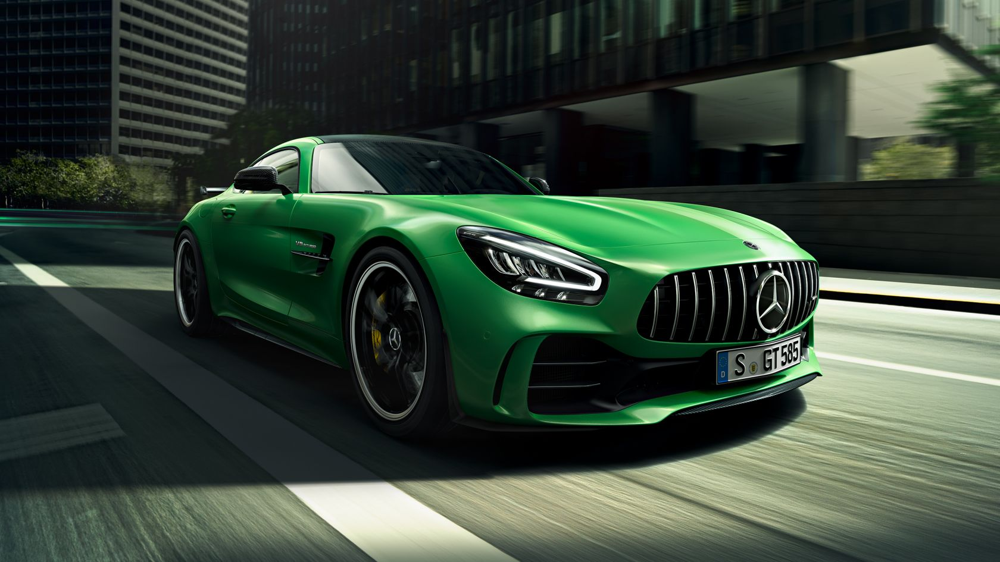
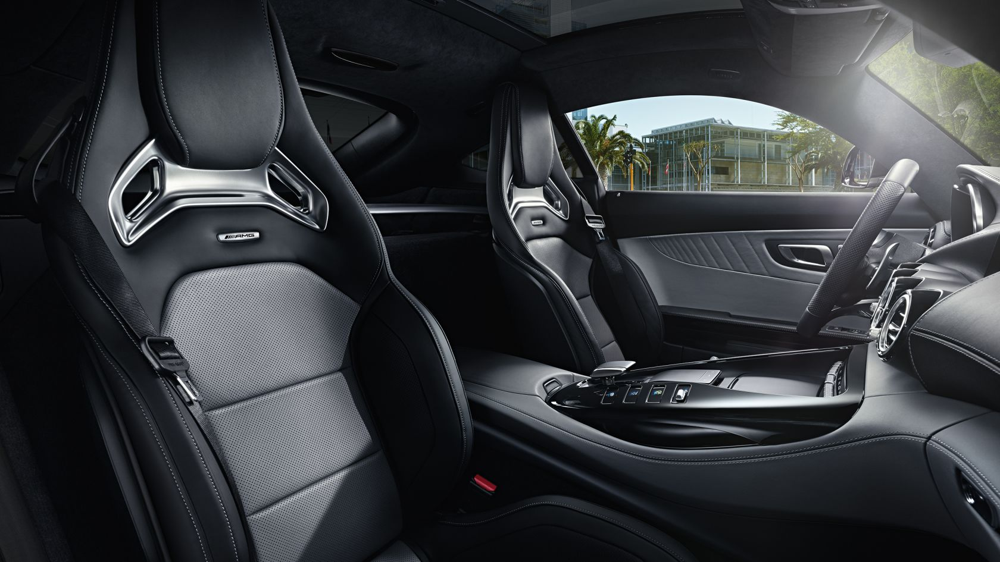
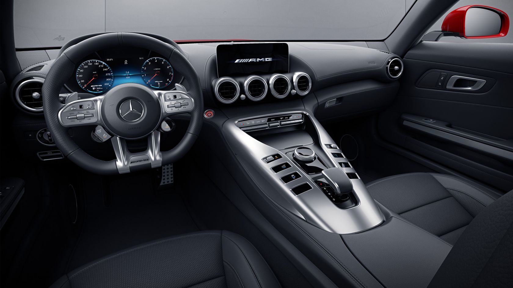

The Mercedes-AMG GT combines the fascinating qualities of an authentic sports car with technology leadership in
this specific segment and a high level of everyday practicality. With a top speed of 304 km/h and accelerating
from 0 to 100 km/h in 4.0 seconds, the Mercedes-AMG GT is the perfect match for those who enjoy a sporty
lifestyle. It expresses the very essence of the AMG performance brand.

Design .
Panoramic sunroof
With the panoramic roof you can create a particularly bright, friendly atmosphere in the interior. The glass
module stretches across the entire roof area, thus creating the impression of a continuous glass area from where
the windscreen begins to where the rear window ends. You are protected from strong sunlight by a manual roller
sun blind.
AMG matt carbon-fibre trim elements
The trim lends your interior an individual look. It blends in harmoniously while also creating exciting
contrasts. As such it reinforces and underscores the interior design. At the same time, the trim is a
continually discernible sign of the quality of a meticulously finished premium product.
The cockpit boasts a high-tech setting: a user interface concept featuring fully
digital instruments and a 31.2cm (10.2-inch) display. Centre-stage is
the new centre console with innovative display switches. The AMG Performance
steering wheel in nappa leather with AMG steering wheel buttons ensures a firm grip on proceedings.
Materials worked to exquisite standards of craftsmanship
bestow a hand-made quality on the vehicle interior.


Exclusive interior.
Positioned for the ultimate in sporty performance, the optional AMG Performance seats provide the essential
basis for fully assured handling. The strongly contoured seat shape with integral head restraints and AMG
badge combines ideal lateral support when adopting a sporty driving style with a particularly dynamic
appearance. Following the facelift, they are now available in an additional upholstery variant.